From Hand to Algorithm
I took one of my oil paintings and directed Midjourney to turn it into two products, a chrome candle holder and a ceramic vase. The question was how much of a painting's anatomy and brushwork can survive being handed to a generative model, and what it takes to control that.
Start from something I made, not from a blank prompt.
I paint in oil, and I had been learning Midjourney through courses. Instead of prompting from nothing, I wanted to put my own work at the centre of the process: use a skull I had painted as the reference, and ask the model to translate its texture, anatomy and mood into real, makeable objects.
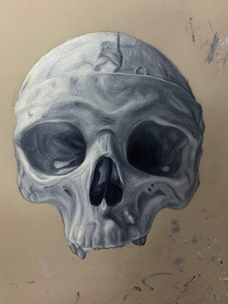
The test was whether the weight of the brushwork and the particular anatomy I had studied would come through in a product render, or be smoothed away. Everything that follows is about controlling that.
Two objects that still read as the painting.
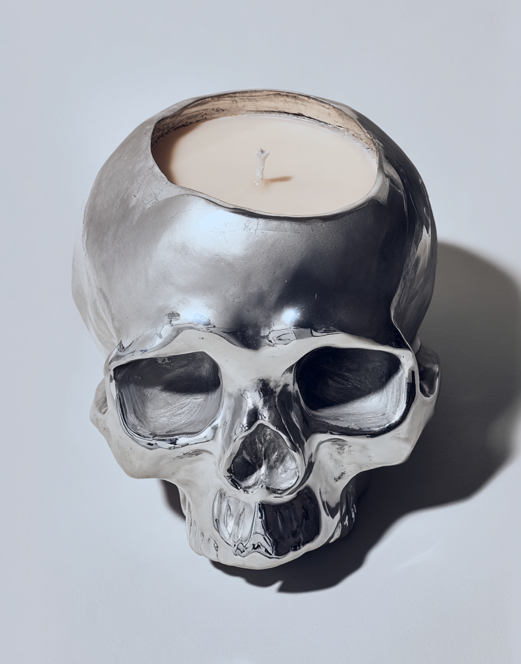
Chrome skull candle holder
The cranial dome, deep eye sockets and jaw all carry through from the painting. The chrome keeps a faint paint-like texture instead of reading as perfectly smooth, an echo of the brushwork.
hyperrealistic chrome skull candle holder, top of skull removed with white wax candle inside with wick, slight overhead, front-on angle, professional studio product lighting, plain white background, commercial product photography, shot on 85mm lens --chaos 5 --raw --stylize 50 --iw 0.7
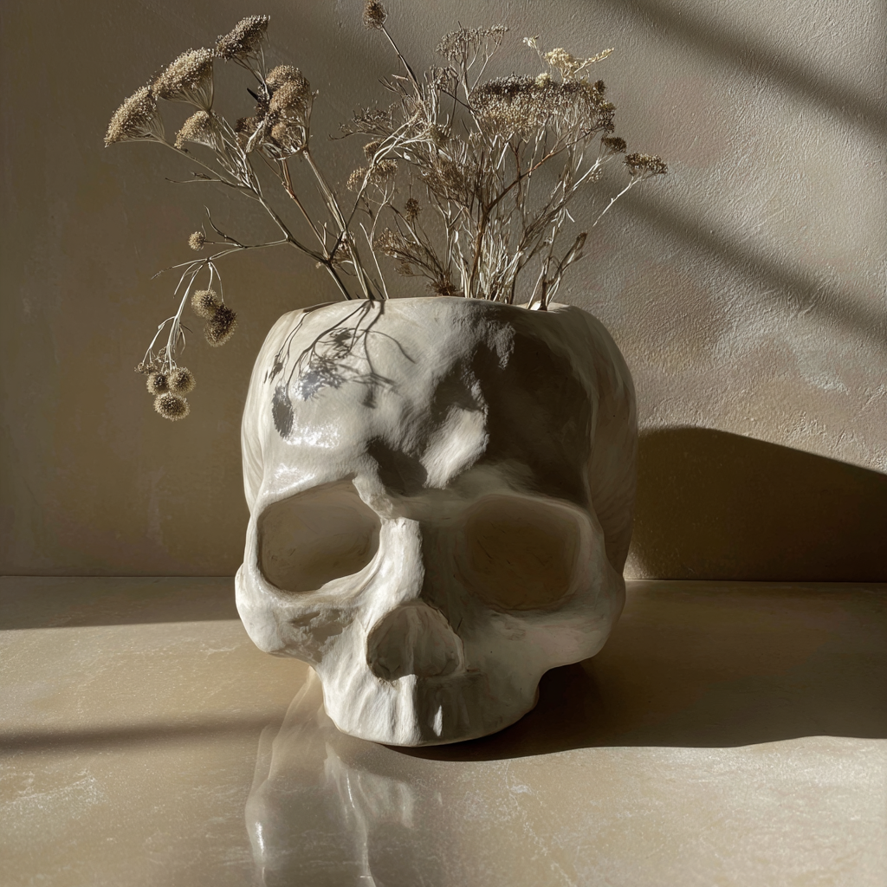
Ceramic skull vase
The proportions, eye cavities and irregular bone structure follow the painting closely. A matte glaze with slight roughness nods to the paint surface rather than going glossy.
ceramic skull vase, dried wildflowers and botanicals emerging from open cranium, dusty rose, ivory, sage, muted neutral tones, warm sandy beige background, dramatic natural side lighting, long soft shadow cast on wall, editorial product photography --raw --sw 50 --iw 0.5
Every product took a run of useful failures.
These are the documented steps behind each product: what I changed, what went wrong, and the exact prompt and parameters each time.
Product ICandle holder, 5 iterationsShow
-
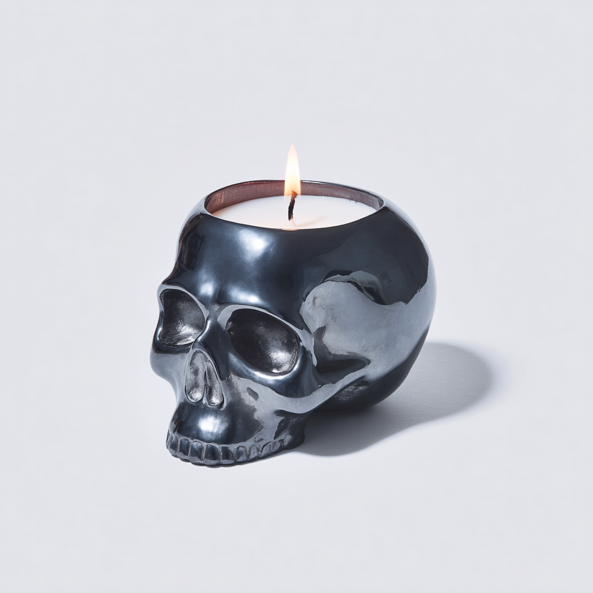
Iteration 1No reference, no character
Prompted without my painting to see the model's default. Far too smooth, no texture and generic anatomy: the clearest argument for using my own reference.
hyperrealistic chrome skull candle holder, top of skull removed with white wax candle inside with lit wick, slight overhead, front-on angle, professional studio product lighting, plain white background, commercial product photography, shot on 85mm lens --chaos 5 --raw --stylize 50
-
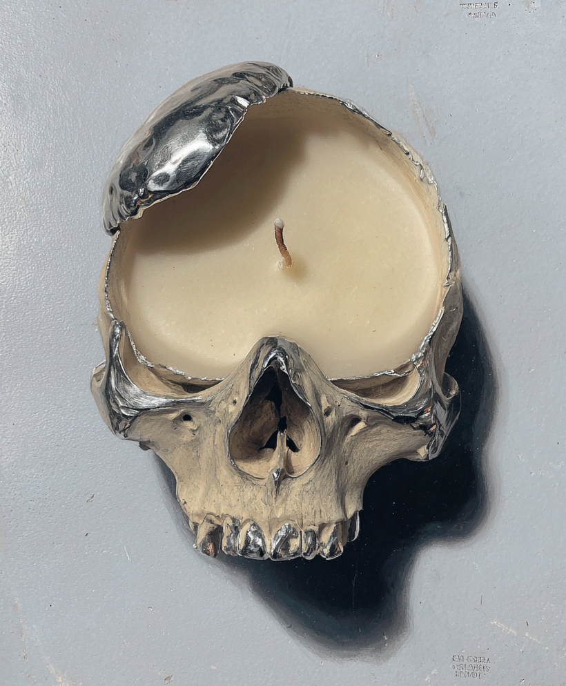
Iteration 2Texture arrives, the wax goes wrong
With the painting as image reference, the texture and anatomy arrived. But the wax pooled into the eye sockets instead of an open cranium, and the skull lost its form.
chrome skull candle holder, top of skull removed and placed beside base as lid, white wax candle inside with wick, slight overhead angle, professional studio product lighting, clean black seamless background, commercial product photography --iw 0.8
-
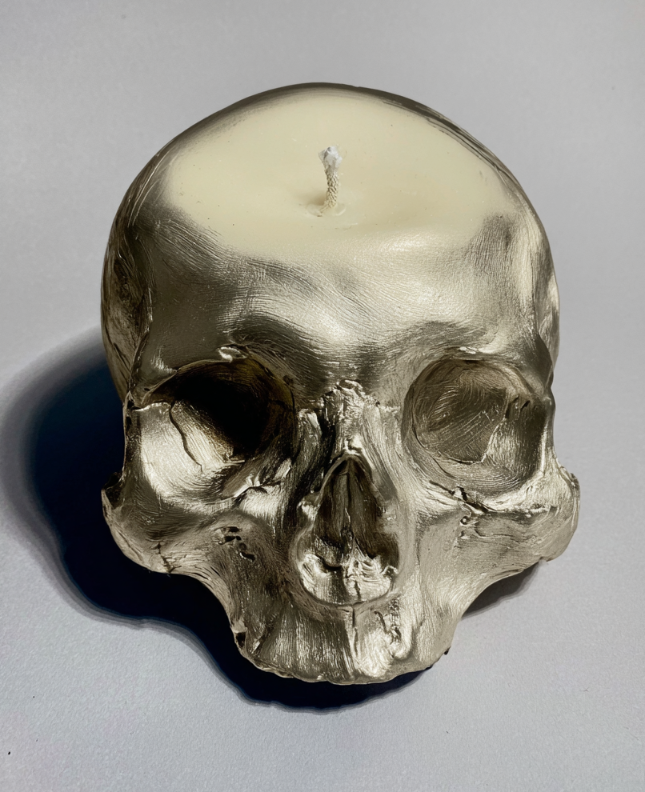
Iteration 3Better angle, impossible object
A front-on angle improved the composition, but the model fused wax and chrome into one material. It looked unmanufacturable, and I wanted something makeable.
chrome skull candle holder, top of skull removed with white wax candle inside with wick, slight overhead, front-on angle, professional studio product lighting, clean black seamless background, commercial product photography --iw 0.6 --s 20
-
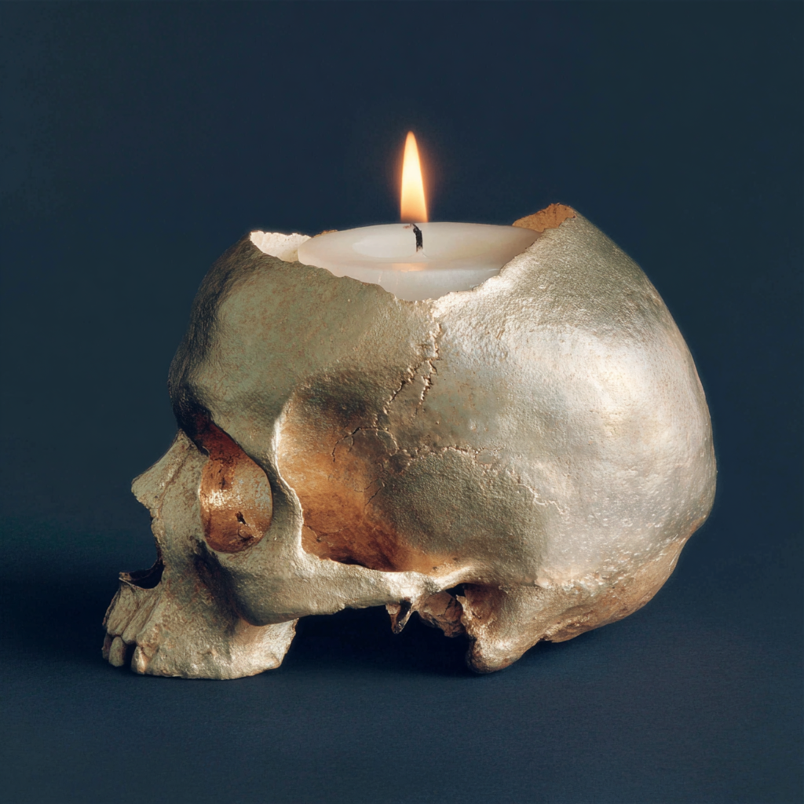
Happy accidentNot what I asked for, worth keeping
Sideways and not chrome, so wrong on the brief. The light and composition are beautiful, so it stays in the record.
chrome skull candle holder, top of skull removed with white wax candle inside with wick, slight overhead angle, professional studio product lighting, clean black seamless background, commercial product photography --iw 0.8 --s 50
-
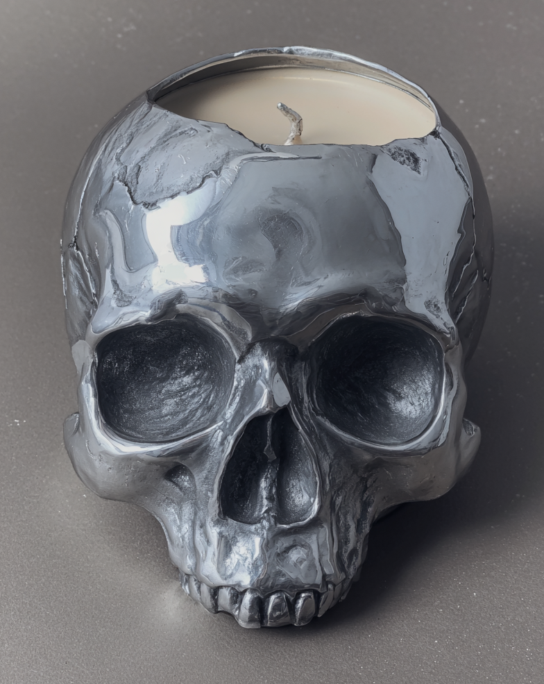
Iteration 5Almost there
A deliberately simple prompt produced the right anatomy, a paint-like texture and a believable product. The background still didn't read as studio photography, which the final prompt fixed with a more specific photography brief.
hyperrealistic chrome skull candle holder. top part of skull removed and lays against the base as a lid. view from slightly from above, with lit candle wick inside. --iw 0.8
Product IIVase, 4 iterationsShow
-
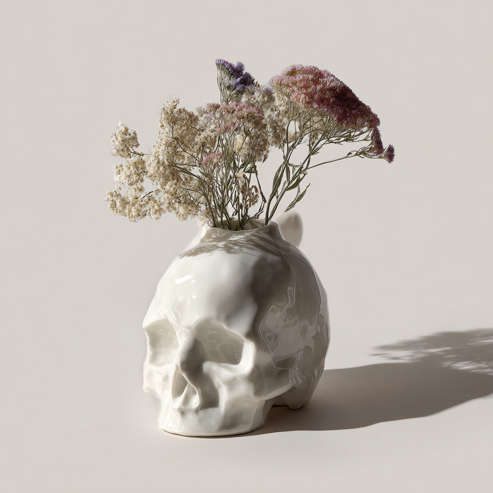
Iteration 1No reference, no texture
Without a reference the flowers correctly grew from inside, like a vase. But it was glossy with no paint texture, and looked nothing like my painting.
hyperrealistic ceramic porcelain vase that is facing forward towards the front, inspired by human skull, flowers sticking out the top like a vase, studio product photography, soft shadow, white background --raw
-
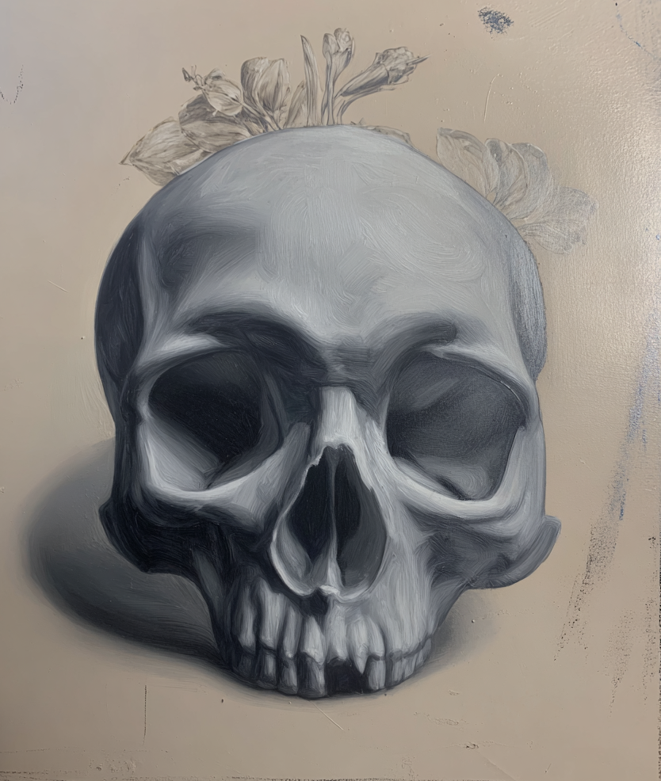
Iteration 2The references overrode the prompt
I accidentally put my painting in both the image and style reference slots, and the output came back as a painting rather than a vase. The prompt was right; the inputs won. A lesson in how much references control the result.
hyperrealistic ceramic porcelain skull-shaped vase, fresh flowers blooming out of the top in muted neutral tones, dusty rose, ivory, sage green, dried botanicals, smooth matte glaze on skull surface with subtle painterly bone texture --no paint texture background canvas --raw --sw 350 --iw 1.5
-
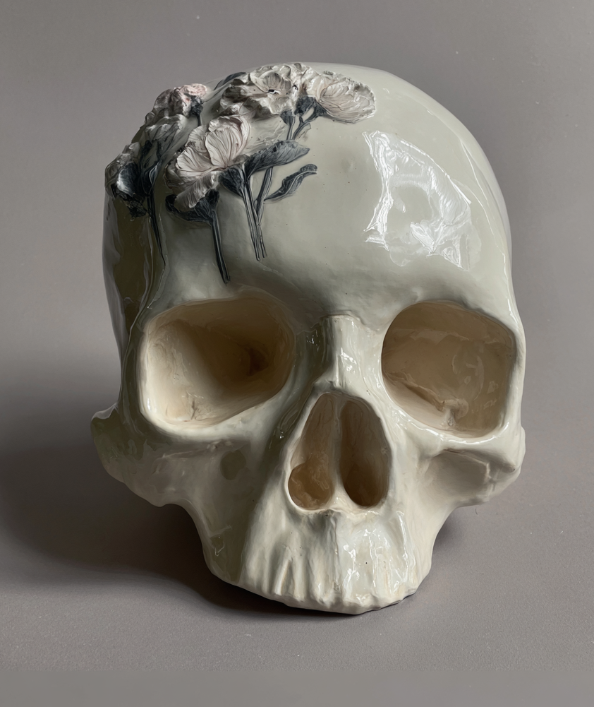
Iteration 3Not quite a vase
A simple prompt to see what needed changing. The flowers were stuck into the ceramic from outside, but the anatomy and paint-like texture were getting close. Progress on material, not yet on product logic.
hyperrealistic ceramic skull vase. top of skull removed with flowers coming out of it. front on angle, professional studio product lighting. --raw --iw 0.9
-
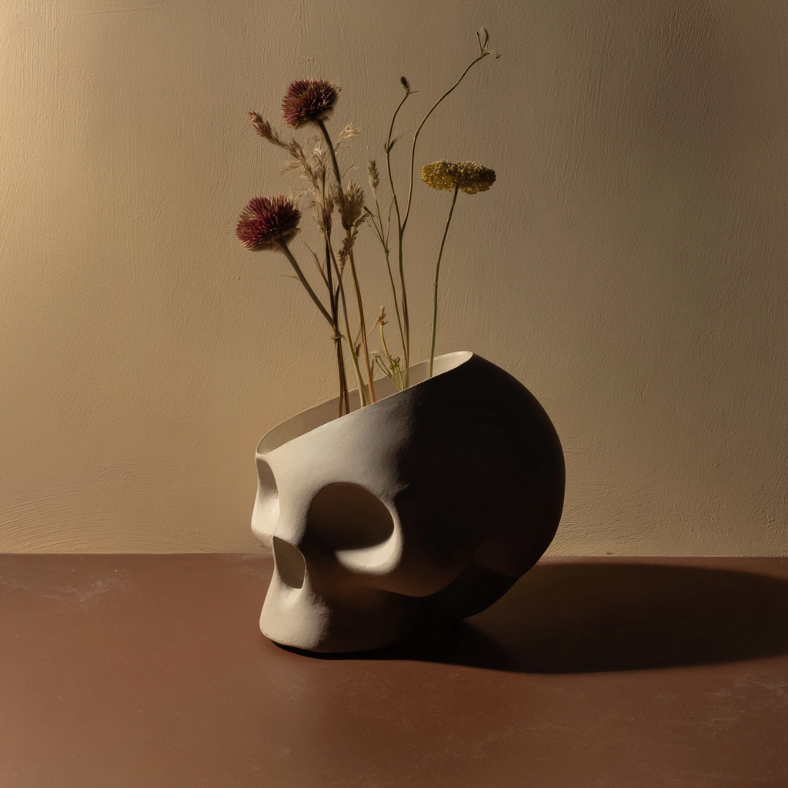
Iteration 4A new style reference, a different object
I added a style reference to help the model understand the vase form. This one pushed it into an abstract, sculptural result: interesting on its own terms, but with none of my painting's anatomy or texture.
ceramic skull vase, dried wildflowers and botanicals emerging from open cranium, dusty rose, ivory, sage, muted neutral tones, warm sandy beige background, dramatic natural side lighting --no grey background --raw --sw 200 --iw 0.5
Controlling a generative model is mostly about inputs.
Less is more
Overloaded prompts confused the model and produced unwanted results. Simpler, clearer language consistently did better.
--iw decides everything
Too high and the output stops reading as a product; too low and the texture and anatomy disappear. Finding the balance was the key to the translation.
The wrong reference wins
A style reference can pull the output into abstraction or bring it right to the brief. Choosing it deserves as much care as the prompt.
Patience is a technique
The finals took far more attempts than are shown here. A willingness to keep testing mattered as much as any prompt trick.